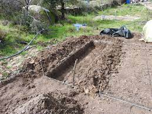

What is Water Conservation?
Water conservation is the preservation, control, and development of water resources.
Methods of Water Conservation
You can conserve water by:
- Practicing mulching
- Shading and cover cropping
- Using sunken beds
- Using shallow pits
Sunken Beds
Sunken beds can be used in dry areas or during the dry season. They can be used either as nursery beds or seedbeds. Because the base of the sunken bed is hidden away from strong sunlight and wind, the rate of heat loss is minimal. Sunken beds, therefore, conserve more moisture than flat or raised beds.
Preparing a Sunken Bed
Pupil's Activity
Tools:
- A tape measure
- Panga
- Slasher
- Jembe
- Shovel
- A rake
- Well-decomposed compost or farmyard manure
Steps:
- Measure the plot of land 1 m wide and any desirable length.
- Clear the vegetation on the measured plot.
- Dig out the top fertile soil and keep it aside.
- Dig out the subsoil and heap it on the edges to make an embankment or dyke.
- Mix the topsoil kept aside with some well-rotten manure, for every one wheelbarrow of topsoil, add one wheelbarrow of manure.
- Return the mixture to the trench, leaving a depression of about 10 cm.
- Water the seedbed to make the soil moist.
The sunken bed is now ready to be used as a seedbed.
Note: You may also use the sunken bed as a nursery bed to raise young vegetable seedlings before transferring them to the seedbed.
Shallow Pits
Also called planting pits or zai pits, shallow pits are used as a method to prevent water runoff and thereby increase infiltration and reduce erosion. The pits trap runoff and thus increase water infiltration into the soil. They are mostly practiced in dry regions.
Preparing Shallow Pits
- Select a suitable site in the school compound.
- Dig a pit 60cm × 60cm × 60cm. Keep the topsoil separately.
- Put light organic matter at the bottom of the pit, i.e., dry grass and leaves.
- Add a layer of topsoil mixed with decomposed manure.
- Leave a depression about 15cm for collecting water and a place for mulching.
Importance of Conserving Moisture in a Seedbed
Conserving moisture in a seedbed leads to better and more reliable crop yields.
Remember, water is a precious resource, and conserving it is crucial for sustainable agriculture and environmental preservation. Take action today to conserve water!